백그램당
졸던 햄찌가 털어온 쿠팡 리뷰 장단점 + 100g당 가격 비교
이 페이지는 쿠팡 파트너스 활동의 일환으로, 이에 따른 일정액의 수수료를 제공받습니다.
다이어트 간식 11개 비교 TOP3
물만 마셔도 살쪄요…
백그램당 추천 순위(맛 만족도·영양성분·1개당 가격·아쉬운 리뷰 종합) · 쿠팡 '다이어트 간식' 검색 결과 2026.11.05 07:45 기준 11개 열람 · 가격은 실시간으로 바뀌어요
▶ 영상 보기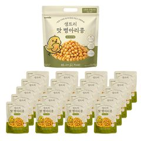
1 샘트리 맛병아리콩 쿠팡보기
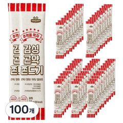
2 감성 곤약 쫀드기 쿠팡보기
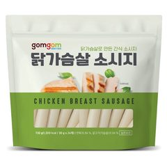
3 곰곰 닭가슴살 소시지 쿠팡보기
햄찌 사심 컵라면 TOP3
육개장이 3위라고?
리뷰·가격 순위가 아닌 백그램당 햄찌 사심 순위 · 쿠팡 '컵라면'·'프리미엄 컵라면' 검색 결과 2026.11.05 06:29 기준 · 쿠팡 '컵라면' 랭킹에선 육개장 사발면 3위 · 가격은 실시간으로 바뀌어요
▶ 영상 보기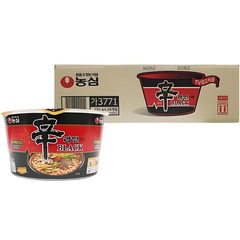
1 농심 신라면 블랙 사발 쿠팡보기
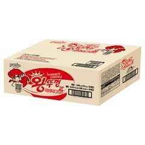
2 팔도 왕뚜껑 쿠팡보기
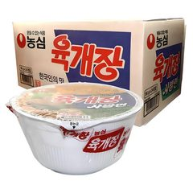
3 농심 육개장 사발면 쿠팡보기
햄찌 사심 라면 TOP3
신라면이 3위라고?
리뷰·가격 순위가 아닌 백그램당 햄찌 사심 순위 · 쿠팡 '라면' 검색 결과 2026.11.04 21:40 기준 · 쿠팡 랭킹은 신라면 2~4위, 안성탕면 6위 · 가격은 실시간으로 바뀌어요
▶ 영상 보기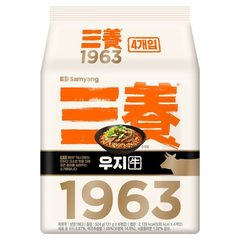
1 삼양 1963 라면 쿠팡보기
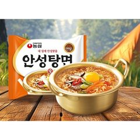
2 농심 안성탕면 쿠팡보기 3 농심 신라면 쿠팡
보기
대용량 과자 추천 TOP3
7만 리뷰가 졌다?
백그램당 추천 순위(맛 만족도·100g당 가격·100g당 당류) · 쿠팡 '대용량 과자' 랭킹순 2026.11.04 14:32 기준 상위 10개 중 리뷰 2,000개 이상 3개 · 쿠팡 랭킹 순서와 달라요 · 가격은 실시간으로 바뀌어요
▶ 영상 보기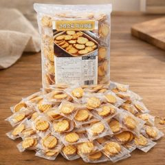
1 크리스피 미니와플 쿠팡보기
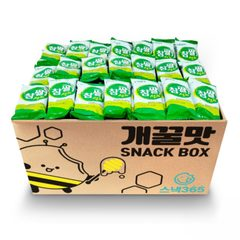
2 크라운 참쌀선과 쿠팡보기
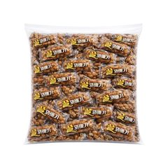
3 한입쏙 미니 꿀꽈배기 쿠팡보기
쿠팡 시리얼 판매 TOP5
당류 제일 적은 건?
쿠팡 검색 '시리얼' 쿠팡 랭킹순(광고 제외) · 2026.11.03 16:37 기준 실시간 순위라 지금은 다를 수 있어요 · 쿠폰 적용 전 판매가
▶ 영상 보기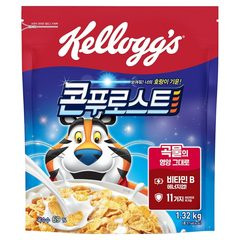
1 켈로그 콘푸로스트 링크제공 불가
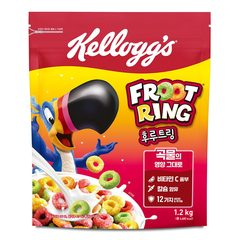
2 켈로그 후루트링 쿠팡보기
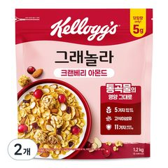
3 켈로그 크랜베리 아몬드 그래놀라 링크제공 불가
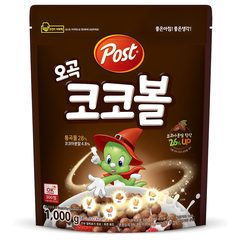
4 포스트 오곡 코코볼 쿠팡보기
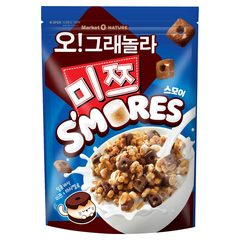
5 마켓오네이처 오그래놀라 미쯔 스모어 쿠팡보기
쿠팡 냉동볶음밥 판매 TOP5
1위가 제일 쌌다고?
쿠팡 검색 '냉동볶음밥' 쿠팡 랭킹순(광고 제외) · 2026.11.02 09:20 기준 실시간 순위라 지금은 다를 수 있어요 · 쿠폰 적용 전 판매가
▶ 영상 보기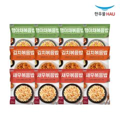
1 한우물 볶음밥 3종 쿠팡보기
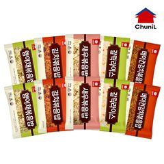
2 천일 볶음밥 5종 쿠팡보기
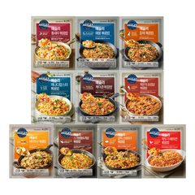
3 애슐리 월드키친 볶음밥 쿠팡보기
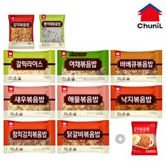
4 천일볶음밥 BEST 10종 + 자연맘 김치 쿠팡보기
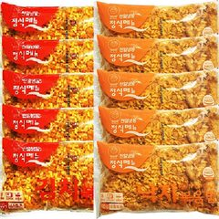
5 천일 낙지볶음밥 + 김치볶음밥 쿠팡보기